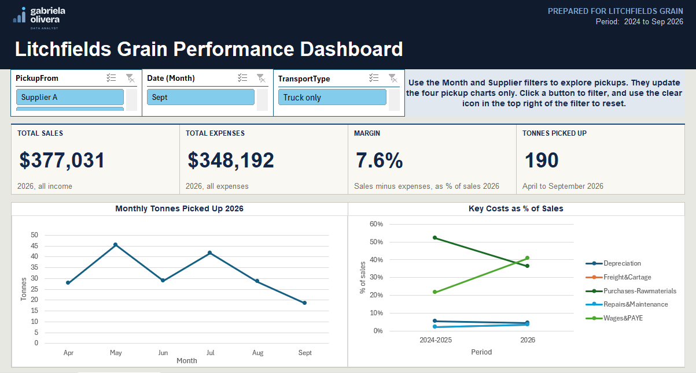
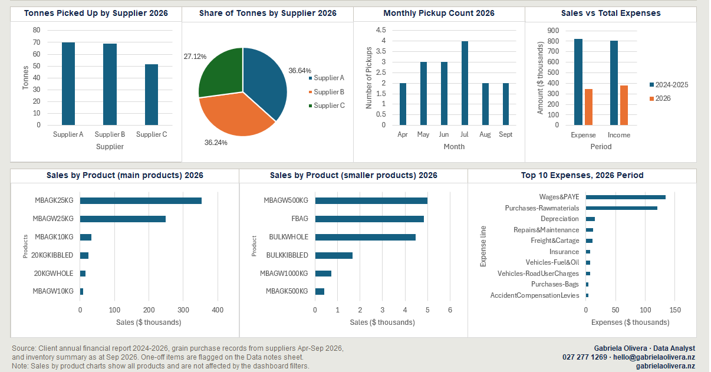

Case study · Data consolidation
Litchfields Grain: sales data analysis for a Bay of Plenty maize supplier.
From scattered records to one clear view of the business. Litchfields Grain is a family-run maize company in Te Puke, Bay of Plenty. I brought three separate sets of records into one dashboard, and left the business with a short list of practical next steps.
Sales, expenses and margin are full-year 2026 figures. Tonnes picked up covers April to September 2026, the period for which pickup records were available.
Three places, three layouts, no joined-up picture.
The business kept its numbers in three places: an income and expenses report from Xero, a sales-by-product inventory report, and records of grain picked up from suppliers. Each used its own layout, and product codes were written differently in each, so nothing could be compared.
I combined the three sources into a single Excel data model with Power Query and built a shared product key so the reports could finally be matched. Every data-quality issue and cleaning decision was logged (18 findings and 17 decisions), so the work can be checked.
On top I built an interactive dashboard with four headline measures, nine charts, and filters by month, supplier and transport type, plus a one-page report with recommendations.
What the owner sees.


Four sales and cost insights.
Expenses as a share of sales decreased
Expenses fell from just over 100% of sales in the start-up period to 92% in 2026.
Two products carry the business
Two products generate more than 80% of product sales.
Price is the main lever
Wages and raw materials make up most of the costs, so adjusting price is more realistic than cutting spend.
Supply is well spread
Three suppliers each provide between 27% and 37% of the grain, so there is no heavy reliance on one.
Recommendations to improve margin and cash flow.
Set the price of the two main products
Because two products generate more than 80% of product sales, and price is the main lever.
Put it at the level that reaches the target margin, and review it whenever costs change.
Record the price per tonne from each supplier
Because three suppliers each provide 27% to 37% of the grain.
Also note the type of grain on each pickup. Comparing suppliers shows where there is room to negotiate, while keeping the supply spread across all three.
Record purchase and delivery costs
Because wages and raw materials make up most of the costs.
The cost of the five best sellers, and the cost of providing free local delivery, so the margin on each product is visible.
Plan cash flow and storage around the peak months
Because tonnes picked up vary a lot from month to month.
Pickups peak in May and July, so those are the months to plan for.
One view of the business.
The business went from three disconnected sets of records to one view of sales, costs, margin and supply, and now knows what to record so future pricing decisions rest on better information.
Gabriela Olivera put together a data report for Litchfields Grain, and it’s been genuinely useful. She took a lot of messy sales information and turned it into something clear and easy to act on. The report showed us trends we hadn’t spotted, and it’s already shaping our pricing and planning decisions. Gabriela was quick, thorough and great to work with. I’d happily recommend her to any small business that wants to understand its numbers better.
★★★★★
Want to see how it was built?
The method behind this project (sources, data model, quality checks and the decisions I made along the way) is documented step by step. It contains no client data.
- Free introductory project
- Figures and supplier names changed
- Published with the client's permission
The client's data is not shared. The structure and proportions of the business are real, with the amounts changed for confidentiality.
Let's find out what your numbers are telling you.
Tell me a little about your business and the question on your mind. I'll reply with which plan fits and a fixed price.
Get in touch → I reply within 2 working days.